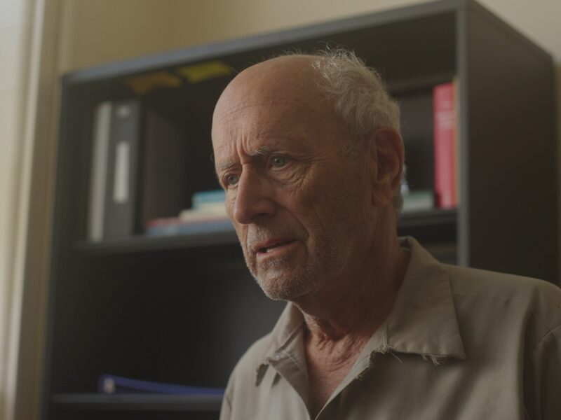

In post-production. Anticipated November 2026.
Pay the Difference
On the eve of July Fourth, a broke handyman has one day to claim his son’s remains.
An intimate story about economic insecurity and bureaucracy. The film traces how administrative and financial pressure reshapes relationships, narrows choices, and alters a person’s sense of dignity. Rather than present bureaucracy as an abstraction or offer a social diagnosis, I use character-centered fiction to follow its intimate consequences and the human cost it exacts.
- Producer
- Ben Lewin
- Filmed in
- Willimantic, Connecticut
- Thesis film
- MFA, University of Connecticut